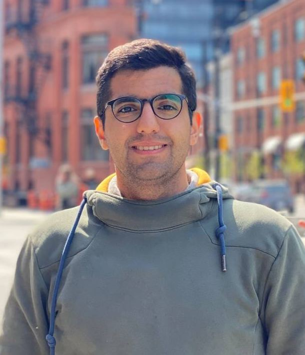

Bio
I am Behdad (Ben) Ehsani, a dedicated MSc graduate in Data Science from HEC Montréal, one of the top business schools in Canada. I also pursued MSc coursework in Operations Research and System Optimization from the University of Tehran. Prior to my studies at University of Tehran, I earned a BSc in Industrial Engineering from K.N. Toosi University.
With a diverse academic background and over two years of professional experience in the research departments of the energy and logistics industries, I have developed a strong foundation in data-driven decision-making approaches. I have effectively addressed managerial challenges using innovative solutions and have a keen interest in leveraging deep learning models for time-series forecasting and natural language processing (NLP).
Alongside my expertise in AWS Cloud services, I am committed to staying at the forefront of cutting-edge technology and continuously seek to develop innovative solutions to complex problems. My technical skills include programming in Python and R, SQL, machine learning frameworks such as PyTorch and TensorFlow, and utilizing AWS Cloud platform services.
Throughout my academic and professional journey, I have been recognized for my achievements, winning several awards and publishing in reputable journals. I am passionate about conveying technical solutions to non-technical stakeholders, and I possess excellent teamwork and technical writing skills.
Publications
- Publication 1
- Publication 2
- Publication 3
CV
Download my CV here.